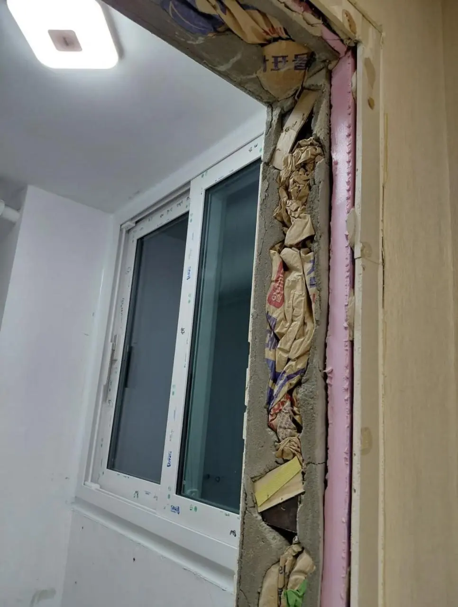

K 원가 절감 시공
댓글
시멘트 아낄려고 저걸 쑤셔 넣은거야? ㅁㅊ
+폐기물 처리비 절약
진짜 지독하네
폐기물 버리는 것도 돈이라 저럼 ㅋㅋ
K- 단열
시멘트 짝짝 갈라진거 봐라 ㅋㅋ
아니 폼을 안쏘고 저런다고? 왜?
저 지랄하는 품이 더 들겠다 병신 못배운새끼들
직업에 귀천이 없다고?
공사할 때는 돈을 써서 감시를 붙이든가 가족을 붙여놓든 하루종일 감시해야됨
원래는 폼써야하는건가?
내가 아버지 따라다니면서 심해봐야 담배 비닐까고 그거 귀찮아서 쑤셔박는 놈은 봤어도 이런 진풍경은 또 처음보네;
재료비도 절감하고 폐기물처리비용도 아끼고 ㅋㅋ
전등은 왜 대각선인데 ㅋㅋㅋㅋ
앰생들 직업이라 어쩔 수 없긴 함
말로 개도가 안됨
이건 뭐라고 쉴드칠지 궁금해서 새로고침중
시멘트 비용 아끼려고, 폐기물 처리비용 아끼려고 그런것도 아님
저러는거 실제로 현장에서 봐서 아는데
폐기물 처리하는 곳까지 들고 옮기기 번거로워서 저럼
가끔 남은 시멘트 처치 곤란하면 그 자리에서 아무데나 공구리 더 쳐놓는것도 봄.. 돈이 문제가 아니라 현장 뒤처리 하는것도 다 시간이니까 시간 아끼려고 저러는거..
아 귀찮아서??
ㅇㅇ.. 귀찮아서
와 슈벌;;
문틀 틈이 너무 넓어서 매꾸려고 저런거 같은데 그냥 백업제 넣고 마감했다 생각하면 의미없긴 함ㅋㅋ
왐마 나가살다살다이런건 처음본당께요잉
버리러 가기 귀찮아서 저런거임
쓰집ㄷㄷ